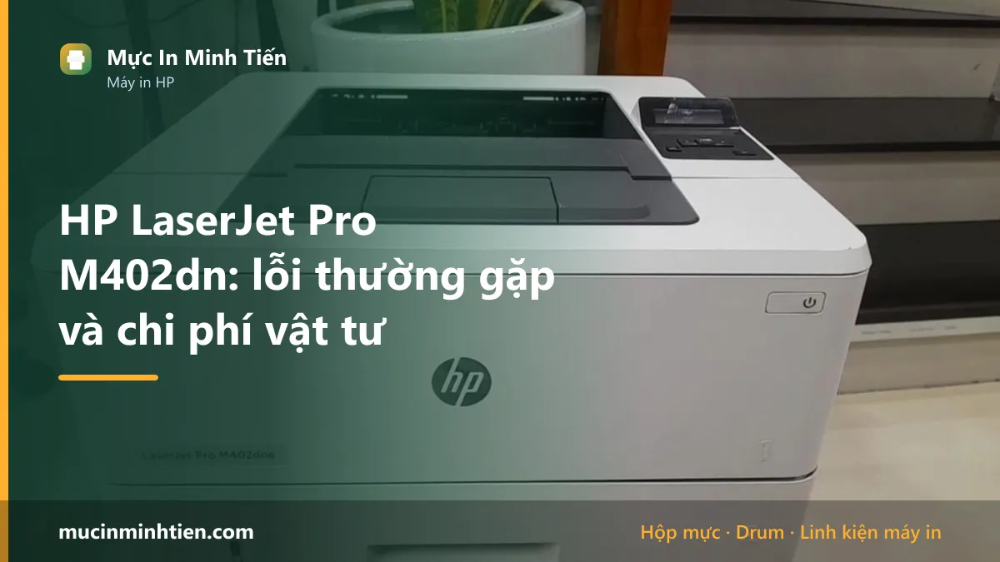
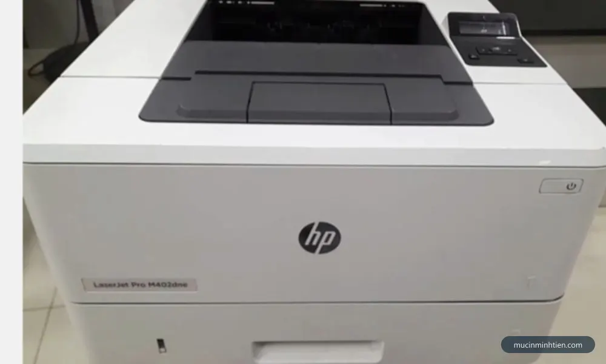
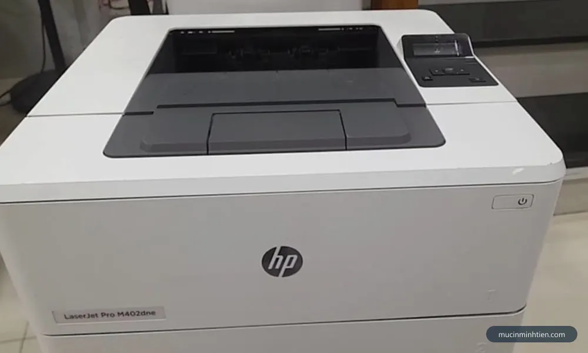
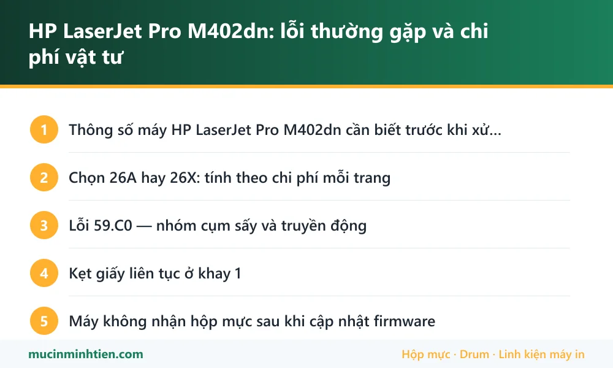

HP LaserJet Pro M402dn: lỗi thường gặp và chi phí vật tư

HP LaserJet Pro M402dn có ba nhóm bệnh đặc trưng: lỗi 59.C0 liên quan cụm sấy và truyền động sấy, kẹt giấy do quả đào và tấm tách giấy khay 1 mòn, và máy không nhận hộp mực sau khi firmware được cập nhật. Ngoài ra là nhóm lỗi bản in thông thường của mọi máy laser. Đây là dòng máy bền và vật tư 226A rất sẵn nên chi phí duy trì thấp.
Thông số máy HP LaserJet Pro M402dn cần biết trước khi xử lý
Biết đúng máy mình đang dùng loại nào giúp khỏi mua nhầm vật tư và khỏi làm theo hướng dẫn của dòng khác.
| Hạng mục | Chi tiết |
|---|---|
| Hộp mực | CF226A (26A) và bản dung lượng cao CF226X (26X) |
| Số trang mỗi hộp | Khoảng 3.100 trang với 26A, khoảng 9.000 trang với 26X, ở độ phủ 5% |
| In hai mặt | Có, tự động — đó là ý nghĩa chữ d trong tên máy |
| Kết nối | USB và cổng mạng LAN. Bản có Wi-Fi là M402dw |
| Kiểu máy | Đơn năng — chỉ in, không scan, không copy |
| Vật tư thay thế | Trục từ, trục sạc, drum, bao lụa, lô ép, quả đào đều có rời cho mã 226A |
Chọn 26A hay 26X: tính theo chi phí mỗi trang
Máy dùng được cả hai mã, phôi giống nhau, chỉ khác lượng mực bên trong. 26A cho khoảng 3.100 trang, 26X cho khoảng 9.000 trang ở cùng độ phủ 5%.
Cách chọn đúng không nằm ở giá hộp mà ở chi phí trên mỗi trang: lấy giá hộp chia cho số trang. Với văn phòng in trên 1.000 trang mỗi tháng, 26X gần như luôn rẻ hơn tính theo trang, đồng thời đỡ công thay hộp. Văn phòng in ít thì 26A hợp hơn vì mực để lâu trong hộp cũng xuống cấp.
Chi tiết mã mực, danh sách máy dùng chung và giá có ở trang hộp mực 26A / CF226A.
Lỗi 59.C0 — nhóm cụm sấy và truyền động
Đây là mã lỗi đặc trưng nhất của dòng M402 và M403. Máy dừng giữa chừng, màn hình hiện mã lỗi và không in tiếp được.
Mã 59 thuộc nhóm lỗi truyền động, phần lớn liên quan tới cụm sấy: bánh răng truyền động mòn hoặc vỡ răng, mô tơ kéo cụm sấy yếu, hoặc cụm sấy bị kẹt do mảnh giấy còn sót.
Việc nên làm trước khi gọi thợ:
- Tắt máy, rút điện, đợi máy nguội hẳn ít nhất 20 phút — cụm sấy rất nóng.
- Mở nắp sau, soi đèn kiểm tra xem có mảnh giấy nào kẹt trong đường sấy không. Gỡ theo chiều giấy đi.
- Mở khay, rút hộp mực, kiểm tra khoang máy có dị vật không.
- Cắm điện, bật lại. Lỗi hết nghĩa là chỉ do kẹt tạm thời.
Lỗi trở lại sau vài trang thì gần như chắc chắn là bánh răng hoặc mô tơ, cần mở máy — đây là ranh giới nên dừng tự làm.

Kẹt giấy liên tục ở khay 1
Bệnh tuổi tác điển hình. Hai chi tiết mòn cùng lúc và người dùng thường chỉ thay một cái rồi tưởng chưa hết bệnh.
- Quả đào khay 1. Bề mặt cao su chai bóng, không bám giấy nữa. Máy kêu nhưng giấy nằm im, hoặc kéo lệch.
- Tấm tách giấy (load giấy) khay 1. Mòn thì máy kéo nhiều tờ cùng lúc rồi báo kẹt.
Hai chi tiết này rẻ và nên thay cùng lúc. Cách nhận diện chi tiết theo triệu chứng có ở bài máy in không kéo giấy.
Nếu giấy đi qua được nhưng nhăn hoặc nhòe ở đoạn cuối, vấn đề chuyển sang cụm sấy chứ không còn là chuyện kéo giấy.
Máy không nhận hộp mực sau khi cập nhật firmware
Đây là tình huống khiến nhiều văn phòng bối rối vì máy đang chạy tốt, không ai đụng vào, tự nhiên báo lỗi hộp mực.
Firmware của máy có thể được cập nhật tự động qua mạng, và bản mới thay đổi cách máy kiểm tra chip trên hộp mực. Hộp mực đang dùng vẫn nguyên vẹn nhưng máy không còn chấp nhận chip đó nữa.
Cách xử lý theo thứ tự:
- Rút hộp mực, lau tiếp điểm chip bằng khăn khô mềm, lắp lại. Loại trừ khả năng chỉ là bám bụi.
- Thử một hộp mực khác còn tốt để xác định lỗi ở hộp hay ở máy.
- Nếu đúng là do firmware, thay chip tương thích với bản firmware hiện tại là cách nhanh nhất — chip CF226A bán rời và rẻ.
- Tắt chế độ tự cập nhật firmware trong menu máy để tránh lặp lại.
Trường hợp máy vẫn nhận hộp mực nhưng báo sắp hết trong khi mực còn nhiều, đọc thêm cách reset máy in HP.

Bản in mờ, sọc, lem trên M402dn
Nhóm lỗi chung của mọi máy laser, nhưng trên dòng này có một điểm riêng đáng nhớ: vì máy in nhanh và chạy khối lượng lớn, các chi tiết trong hộp mực mòn sớm hơn cảm nhận thông thường.
- In mờ đều, nhạt dần — mực sắp cạn hoặc trục từ 226A đã yếu.
- Sọc đen dọc — drum xước hoặc gạt mực mẻ, xem bài về sọc đen dọc.
- Vệt trắng dọc — vật lạ chặn khe mực hoặc trục từ mòn theo dải, xem sọc trắng dọc.
- Sọc ngang lặp đều — đo chu kỳ để biết trục nào hỏng, xem sọc ngang.
- Chạm tay dính mực — bao lụa rách hoặc lô ép mòn, thuộc cụm sấy.
Bảng giá vật tư 226A thật trong kho
Vật tư rời cho dòng M402 rất sẵn, đó là lý do máy này đáng sửa hơn nhiều dòng đời mới. Số lượng ghi rõ trong ngoặc vì nhiều mã bán theo bộ.
| Vật tư cho M402dn | Quy cách | Giá kho |
|---|---|---|
| Hộp mực 226A / 052 | 1 hộp | 160.000 đ |
| Chip mực CF226A | Bộ 2 con | 30.000 đ |
| Drum 226A (phôi chính hãng) | Bộ 3 cây | 75.000 đ |
| Trục từ 226A | Bộ 5 cây | 130.000 đ |
| Trục sạc 226A | Bộ 5 cây | 175.000 đ |
| Bạc phíp 226A | 1 cặp | 50.000 đ |
| Bao lụa 402D / 226A | 1 cái | 80.000 đ |
| Lô ép HP 226A / 402 | 1 cái | 130.000 đ |
| Quả đào khay 1 | 1 cái | 50.000 đ |
| Load giấy, tấm tách giấy khay 1 | 1 cái | 50.000 đ |
| Lò xo kéo hộp mực 226A | Bộ 5 | 60.000 đ |
Giá vật tư rời, chưa gồm công thay. Mua lẻ từng cây thì đơn giá cao hơn giá chia trung bình của bộ.
Bảng tra: dấu hiệu nào ứng với nguyên nhân nào
| Dấu hiệu | Nguyên nhân | Cách xử lý | Chi phí |
|---|---|---|---|
| Màn hình báo 59.C0, máy dừng giữa chừng | Kẹt giấy trong cụm sấy, bánh răng hoặc mô tơ truyền động | Gỡ kẹt trước; tái phát thì mở máy kiểm tra truyền động | Báo giá theo tình trạng |
| Kêu nhưng giấy nằm im ở khay 1 | Quả đào chai | Thay quả đào khay 1 | 50.000 đ |
| Kéo nhiều tờ cùng lúc rồi báo kẹt | Tấm tách giấy mòn | Thay load giấy khay 1 | 50.000 đ |
| Báo lỗi hộp mực dù hộp còn nguyên | Firmware đã cập nhật, chip không còn được chấp nhận | Lau tiếp điểm; không hết thì thay chip | 30.000 đ/bộ 2 con |
| In mờ đều, nhạt dần | Mực sắp cạn hoặc trục từ yếu | Nạp mực hoặc thay trục từ 226A | từ 26.000 đ/cây |
| Sọc đen dọc sắc nét | Drum xước | Thay drum 226A | từ 25.000 đ/cây |
| Chạm tay dính mực | Bao lụa rách hoặc lô ép mòn | Thay bao lụa hoặc lô ép | 80.000 – 130.000 đ |
| Giấy ra nhăn ở đoạn cuối | Lô ép mòn không đều | Thay lô ép | 130.000 đ |
Vật tư cho HP LaserJet Pro M402dn có sẵn tại kho 77 Bắc Hải, Phường Diên Hồng, TP.HCM — xem bảng giá 773 mã hoặc gọi 0915 510 203 kèm model máy.
Khi nào nên gọi kỹ thuật viên
- Lỗi 59.C0 quay lại sau khi đã gỡ kẹt giấy — cần mở máy kiểm tra bánh răng và mô tơ cụm sấy
- Cần thay bao lụa hoặc lô ép — cụm sấy chạy nhiệt cao, tháo sai dễ đứt thanh nhiệt
- Máy báo lỗi hộp mực dù đã thử hộp khác còn tốt
- Máy in mạng trong văn phòng, cần đặt IP tĩnh và cài lại cho nhiều máy tính
- Máy dùng khối lượng lớn hằng ngày, cần xử lý dứt điểm trong một lần hẹn
Báo giá xử lý HP LaserJet Pro M402dn tận nơi
| Hạng mục | Giá tham khảo |
|---|---|
| Kiểm tra, vệ sinh hộp mực và khoang máy | từ 100.000 đ |
| Nạp mực hộp 226A | 80.000 – 150.000 đ |
| Thay chip hộp mực | 30.000 đ/bộ 2 con + công |
| Thay drum, trục từ, trục sạc | từ 25.000 đ/cây + công |
| Thay bao lụa cụm sấy | 80.000 đ + công |
| Thay lô ép | 130.000 đ + công |
| Thay quả đào và load giấy khay 1 | 50.000 đ mỗi chi tiết + công |
| Xử lý lỗi 59.C0 | Báo giá sau khi kiểm tra |
Kỹ thuật viên kiểm tra và báo giá trước khi làm — xem cam kết ở dịch vụ sửa máy in tận nơi TP.HCM.
Cách phòng tránh tái phát
- Thay quả đào và load giấy cùng lúc. Hai chi tiết này mòn song song, thay một cái thì vài tuần sau lại kẹt giấy vì cái còn lại.
- Tắt tự động cập nhật firmware nếu văn phòng đang dùng hộp mực nạp lại — tránh tình huống máy tự nhiên không nhận hộp mực.
- Dùng giấy 70–80 gsm khô ráo. Máy in nhanh nên giấy ẩm gây kẹt và nhăn nhiều hơn hẳn so với máy chậm.
- Vệ sinh khoang hộp mực mỗi lần nạp mực. Bụi mực tích tụ là nguồn gốc của lỗi tiếp điểm và lỗi cụm quang về sau.
- In đều đặn thay vì để máy nghỉ dài. Bánh răng và lô ép chịu tải tốt hơn khi máy chạy đều so với khi nằm không rồi in dồn.

Câu hỏi thường gặp về HP LaserJet Pro M402dn
HP M402dn dùng hộp mực gì, 26A và 26X khác nhau ra sao?
Lỗi 59.C0 trên HP M402dn có tự sửa được không?
Vì sao máy đang chạy tốt bỗng báo lỗi hộp mực?
M402dn kẹt giấy liên tục ở khay 1 thì thay gì?
Vật tư cho M402dn có sẵn và đắt không?
M402dn có in hai mặt tự động không?
Bài viết liên quan
- Hộp mực 26A / CF226A: dùng cho máy nào, giá bao nhiêu
- Máy in không kéo giấy: 6 nguyên nhân và cách khắc phục
- Cách reset máy in HP và lỗi chấm than 107a, 107w
- Máy in bị sọc ngang: 6 nguyên nhân và cách khắc phục
- Máy in bị lem mực: 6 nguyên nhân và cách khắc phục
- Máy tính không nhận máy in: 8 bước kiểm tra